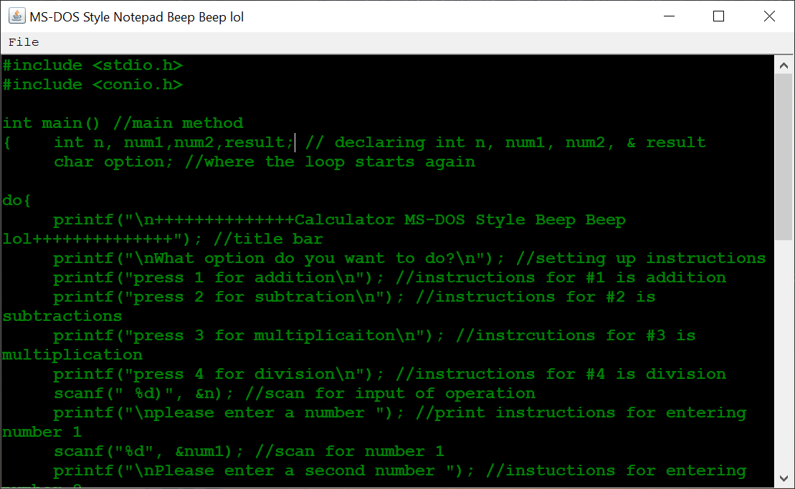

I am a passionate writer with the technology skills to communicate complex ideas in a
palatable manner. I coded this website to show my experience with Adobe products, HTML, CSS, JavaScript, Java, & C.
I have a background in technical & curriculum writing for colleges & the K12 School system along with several content creation projects.
Adobe Curriculum Writing & Designing

Employee handout for chefs of Papa John's. This project similates a fast implementation of a new product and delivers information consisely.
Adobe Curriculum Writing & Designing
Customer infographic on how to use Chase's contactless payment. This is Chase's response to keeping customers safe during COVID-19.
Adobe Curriculum Writing & Designing
Teaching infographic on how C source code is parsed by the compiler.
Adobe Curriculum Writing & Designing
Three day instructional sequence on economics for 12th grade.
Recreation of Tetris using Java swing drawing api. The Java project contains three classes one for the board, shapes, and key inputs.

Microsoft Notepad recreation in Java - made to mimic the retro MS-DOS console. The notepad includes standard functions of reading and writing files.
Calulator in C that takes two inputs from the user and solves for the user selected operation.
Slot machine game that tracks a users score in tokens. The program stores values and prints random variables.